Arte en gouache · etiopia
Ver el README.
0 · Caras: fijar la cara 6/6

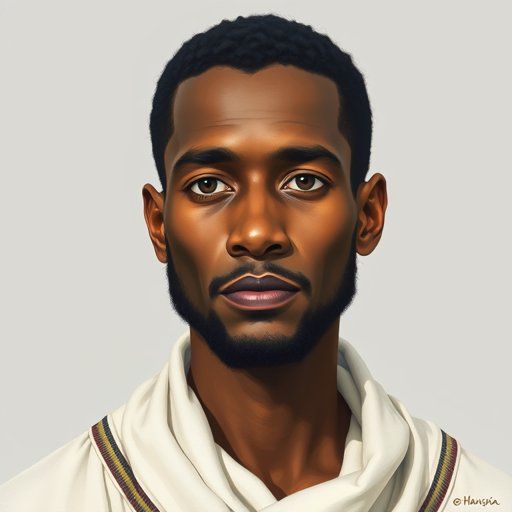
prompt
Gouache painting for a historical strategy game, flat opaque color shapes, simple graphic forms, matte paper texture, limited palette. Portrait of an Ethiopian Amhara man from the northern Ethiopian highlands, a grown adult in his early thirties, with a mature face: an oval face, high cheekbones, a long straight narrow nose, large dark eyes, faint expression lines around the eyes, warm medium-brown skin, full dark brown lips, short tightly curled black hair and a short trimmed black beard, a thick adult neck, broad shoulders and adult body proportions. He wears a white cotton shawl with a thin colored woven border over his shoulders. Head and shoulders portrait, the head fills the upper half of the frame, face turned slightly to the side, plain flat light grey background.

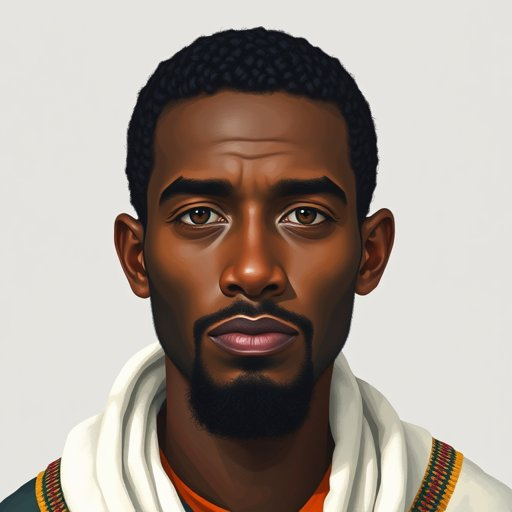
prompt
Gouache painting for a historical strategy game, flat opaque color shapes, simple graphic forms, matte paper texture, limited palette. Portrait of an Ethiopian Tigray man from the northern Ethiopian highlands, a grown adult in his early thirties, with a mature face: an oval face, high cheekbones, a straight nose with a rounded tip, large dark eyes, faint expression lines around the eyes, warm medium-brown skin, full dark brown lips, short tightly curled black hair and a short trimmed black beard, a thick adult neck, broad shoulders and adult body proportions. He wears a white cotton shawl with a thin colored woven border over his shoulders. Head and shoulders portrait, the head fills the upper half of the frame, face turned slightly to the side, plain flat light grey background.

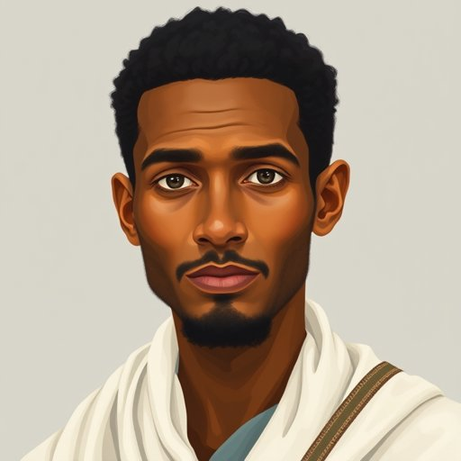
prompt
Gouache painting for a historical strategy game, flat opaque color shapes, simple graphic forms, matte paper texture, limited palette. Portrait of an Ethiopian Amhara man from the northern Ethiopian highlands, a grown adult in his early thirties, with a mature face: an oval face, high cheekbones, a slightly aquiline nose, large dark eyes, faint expression lines around the eyes, warm medium-brown skin, full dark brown lips, short tightly curled black hair and a short trimmed black beard, a thick adult neck, broad shoulders and adult body proportions. He wears a white cotton shawl with a thin colored woven border over his shoulders. Head and shoulders portrait, the head fills the upper half of the frame, face turned slightly to the side, plain flat light grey background.

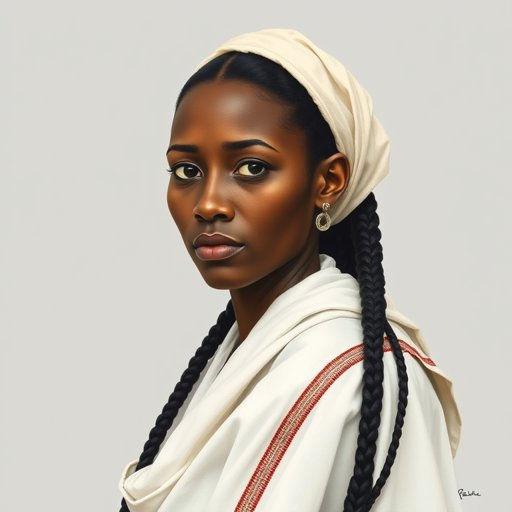
prompt
Gouache painting for a historical strategy game, flat opaque color shapes, simple graphic forms, matte paper texture, limited palette. Portrait of an Ethiopian Amhara woman from the northern Ethiopian highlands, a grown adult in her early thirties, with a mature face: an oval face, high cheekbones, a long straight narrow nose, large dark eyes, faint expression lines, warm medium-brown skin, full dark brownish lips, black hair braided in many thin tight braids along the scalp (shuruba) gathered at the back, adult shoulders and adult body proportions. She wears a white cotton dress and a white cotton shawl with a thin colored woven border. Head and shoulders portrait, the head fills the upper half of the frame, face turned slightly to the side, plain flat light grey background.

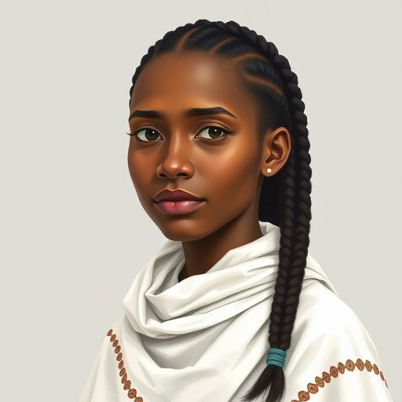
prompt
Gouache painting for a historical strategy game, flat opaque color shapes, simple graphic forms, matte paper texture, limited palette. Portrait of an Ethiopian Tigray woman from the northern Ethiopian highlands, a grown adult in her early thirties, with a mature face: an oval face, high cheekbones, a straight nose with a rounded tip, large dark eyes, faint expression lines, warm medium-brown skin, full dark brownish lips, black hair braided in many thin tight braids along the scalp (shuruba) gathered at the back, adult shoulders and adult body proportions. She wears a white cotton dress and a white cotton shawl with a thin colored woven border. Head and shoulders portrait, the head fills the upper half of the frame, face turned slightly to the side, plain flat light grey background.

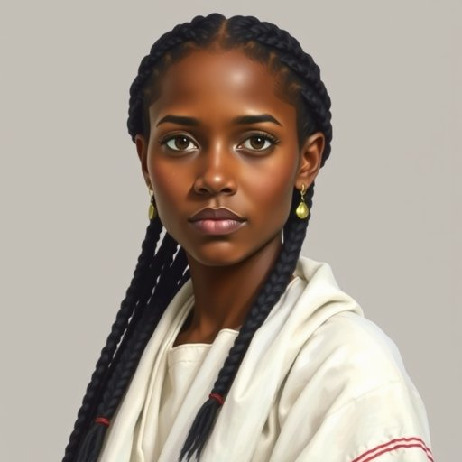
prompt
Gouache painting for a historical strategy game, flat opaque color shapes, simple graphic forms, matte paper texture, limited palette. Portrait of an Ethiopian Amhara woman from the northern Ethiopian highlands, a grown adult in her early thirties, with a mature face: an oval face, high cheekbones, a slightly aquiline nose, large dark eyes, faint expression lines, warm medium-brown skin, full dark brownish lips, black hair braided in many thin tight braids along the scalp (shuruba) gathered at the back, adult shoulders and adult body proportions. She wears a white cotton dress and a white cotton shawl with a thin colored woven border. Head and shoulders portrait, the head fills the upper half of the frame, face turned slightly to the side, plain flat light grey background.
1 · Unidades (un arte por unidad: ícono y retrato) 19/19

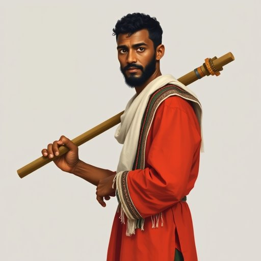

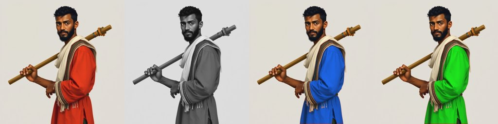
prompt
Gouache painting for a historical strategy game, flat opaque color shapes, simple graphic forms, matte paper texture, limited palette. A farmer carrying a wooden ox plough (maresha) on his shoulder: a long wooden beam with a short iron-tipped share and a handle. He wears a long plain solid bright red cotton tunic, one flat uniform red color reaching the knees and a white cotton shawl (shamma) with a thin colored woven border draped over one shoulder. The figure is an Ethiopian Amhara man from the northern Ethiopian highlands, a grown adult in his early thirties, with a mature face: an oval face, high cheekbones, a slightly aquiline nose, large dark eyes, faint expression lines around the eyes, warm medium-brown skin, full dark brown lips, short tightly curled black hair and a short trimmed black beard, a thick adult neck, broad shoulders and adult body proportions, a mature man of about thirty-five with a strong adult face and smile lines. Natural white cotton, hide and leather tones for everything except the red tunic. Waist-up portrait of one single person: the head, shoulders and hands fill the frame, the tool or weapon visible next to the body, three-quarter view, isolated on a plain flat light grey background.

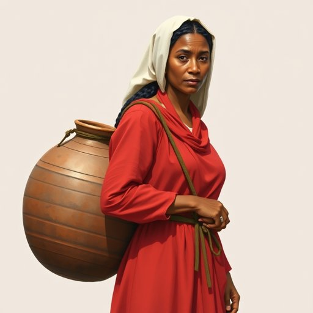

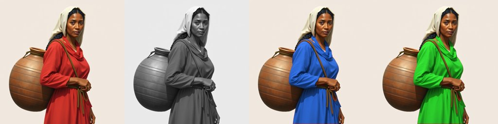
antes: v1

prompt
Gouache painting for a historical strategy game, flat opaque color shapes, simple graphic forms, matte paper texture, limited palette. A woman carrying a large round clay water jar on her back, held by a cord across her chest. She wears a long plain solid bright red cotton tunic, one flat uniform red color reaching her ankles and a white cotton shawl over her head and shoulders. She is clearly in her mid thirties, with a long mature face, slight hollows under the cheekbones and a calm experienced look. The figure is an Ethiopian Amhara woman from the northern Ethiopian highlands, a grown adult in her early thirties, with a mature face: an oval face, high cheekbones, a long straight narrow nose, large dark eyes, faint expression lines, warm medium-brown skin, full dark brownish lips, black hair braided in many thin tight braids along the scalp (shuruba) gathered at the back, adult shoulders and adult body proportions, a mature woman of about thirty-five with a strong adult face, a defined jaw and smile lines. Natural white cotton, hide and leather tones for everything except the red tunic. Waist-up portrait of one single person: the head, shoulders and hands fill the frame, the tool or weapon visible next to the body, three-quarter view, isolated on a plain flat light grey background.

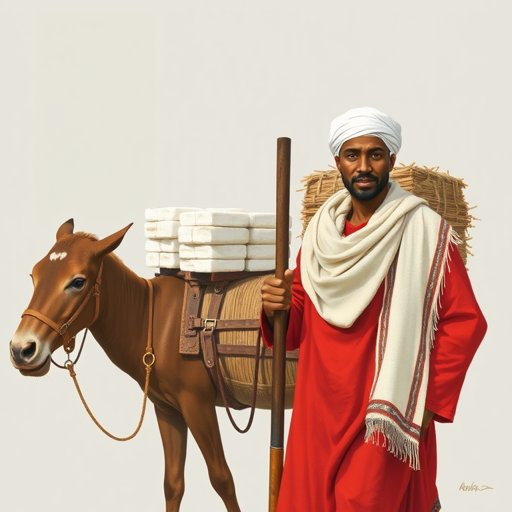

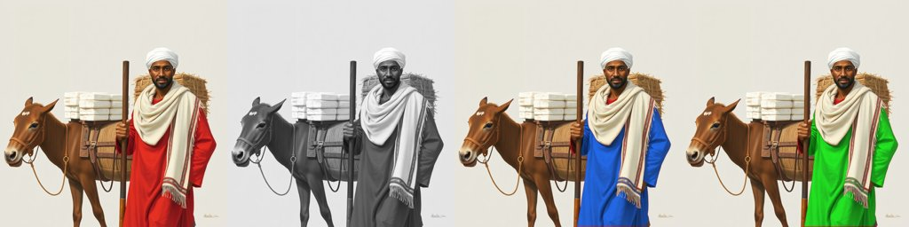
Jabarti: mercaderes musulmanes (Pankhurst, 1961).
prompt
Gouache painting for a historical strategy game, flat opaque color shapes, simple graphic forms, matte paper texture, limited palette. A Muslim caravan merchant leading a mule loaded with stacks of rectangular white salt bars (amole) wrapped in reed matting. He wears a long plain solid bright red cotton tunic, one flat uniform red color, a white cotton turban and a white cotton shawl (shamma) with a thin colored woven border draped over one shoulder. The figure is an Ethiopian Amhara man from the northern Ethiopian highlands, a grown adult in his early thirties, with a mature face: an oval face, high cheekbones, a slightly aquiline nose, large dark eyes, faint expression lines around the eyes, warm medium-brown skin, full dark brown lips, short tightly curled black hair and a short trimmed black beard, a thick adult neck, broad shoulders and adult body proportions, a mature man of about thirty-five with a strong adult face and smile lines. Natural white cotton, hide and leather tones for everything except the red tunic. Waist-up portrait of one single person: the head, shoulders and hands fill the frame, the tool or weapon visible next to the body, three-quarter view, isolated on a plain flat light grey background.

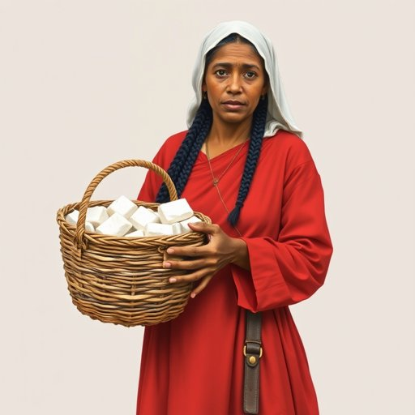

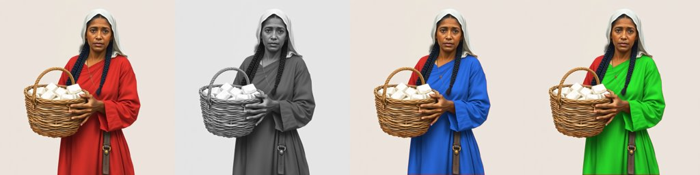
antes: v1

prompt
Gouache painting for a historical strategy game, flat opaque color shapes, simple graphic forms, matte paper texture, limited palette. A woman trader holding a woven basket filled with rectangular white salt bars (amole). She wears a long plain solid bright red cotton tunic, one flat uniform red color reaching her ankles and a white cotton shawl over her head. She is clearly in her mid thirties, with a long mature face, slight hollows under the cheekbones and a calm experienced look. The figure is an Ethiopian Amhara woman from the northern Ethiopian highlands, a grown adult in her early thirties, with a mature face: an oval face, high cheekbones, a long straight narrow nose, large dark eyes, faint expression lines, warm medium-brown skin, full dark brownish lips, black hair braided in many thin tight braids along the scalp (shuruba) gathered at the back, adult shoulders and adult body proportions, a mature woman of about thirty-five with a strong adult face, a defined jaw and smile lines. Natural white cotton, hide and leather tones for everything except the red tunic. Waist-up portrait of one single person: the head, shoulders and hands fill the frame, the tool or weapon visible next to the body, three-quarter view, isolated on a plain flat light grey background.

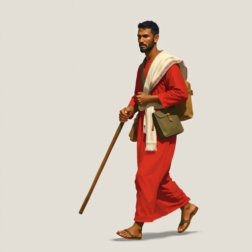

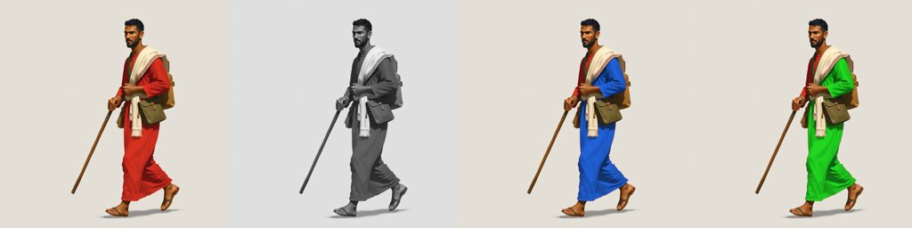
prompt
Gouache painting for a historical strategy game, flat opaque color shapes, simple graphic forms, matte paper texture, limited palette. A messenger walking fast with a long wooden staff, a small leather bag on a strap. He wears a long plain solid bright red cotton tunic, one flat uniform red color reaching the knees and a white cotton shawl (shamma) with a thin colored woven border draped over one shoulder. The figure is an Ethiopian Amhara man from the northern Ethiopian highlands, a grown adult in his early thirties, with a mature face: an oval face, high cheekbones, a slightly aquiline nose, large dark eyes, faint expression lines around the eyes, warm medium-brown skin, full dark brown lips, short tightly curled black hair and a short trimmed black beard, a thick adult neck, broad shoulders and adult body proportions, a mature man of about thirty-five with a strong adult face and smile lines. Natural white cotton, hide and leather tones for everything except the red tunic. Waist-up portrait of one single person: the head, shoulders and hands fill the frame, the tool or weapon visible next to the body, three-quarter view, isolated on a plain flat light grey background.

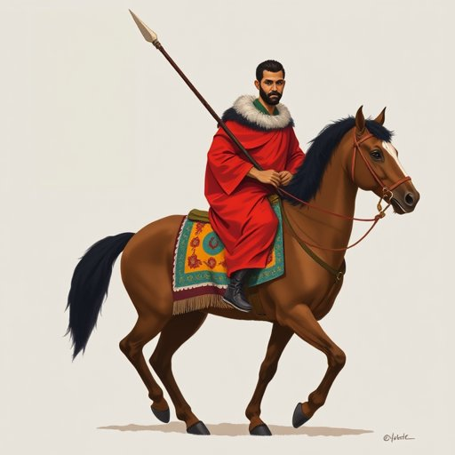

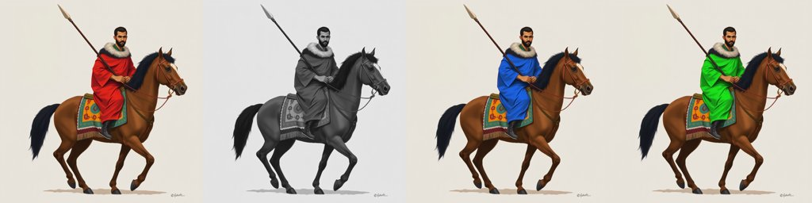
El jinete noble desde la edad I.
prompt
Gouache painting for a historical strategy game, flat opaque color shapes, simple graphic forms, matte paper texture, limited palette. A noble rider on a small sturdy highland horse with a colorful saddle cloth, holding a long spear and a round convex shield of thick hide. He wears a long plain solid bright red cotton tunic, one flat uniform red color and a short cape of black and white colobus monkey fur over the shoulders. The rider is an Ethiopian Amhara man from the northern Ethiopian highlands, a grown adult in his early thirties, with a mature face: an oval face, high cheekbones, a slightly aquiline nose, large dark eyes, faint expression lines around the eyes, warm medium-brown skin, full dark brown lips, short tightly curled black hair and a short trimmed black beard, a thick adult neck, broad shoulders and adult body proportions, a mature man of about thirty-five with a strong adult face and smile lines. Natural white cotton, hide and leather tones for everything except the red tunic. One single rider and horse, the whole horse visible, three-quarter view, isolated on a plain flat light grey background.

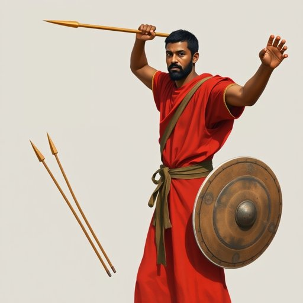

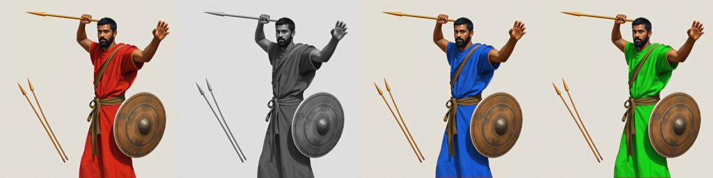
prompt
Gouache painting for a historical strategy game, flat opaque color shapes, simple graphic forms, matte paper texture, limited palette. A javelin thrower raising a javelin over his shoulder, ready to throw, two more javelins and a round convex shield of thick hide in his other hand. He wears a long plain solid bright red cotton tunic, one flat uniform red color reaching the knees. The figure is an Ethiopian Amhara man from the northern Ethiopian highlands, a grown adult in his early thirties, with a mature face: an oval face, high cheekbones, a slightly aquiline nose, large dark eyes, faint expression lines around the eyes, warm medium-brown skin, full dark brown lips, short tightly curled black hair and a short trimmed black beard, a thick adult neck, broad shoulders and adult body proportions, a mature man of about thirty-five with a strong adult face and smile lines. Natural white cotton, hide and leather tones for everything except the red tunic. Waist-up portrait of one single person: the head, shoulders and hands fill the frame, the tool or weapon visible next to the body, three-quarter view, isolated on a plain flat light grey background.

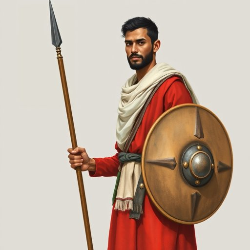

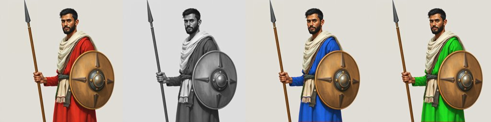
prompt
Gouache painting for a historical strategy game, flat opaque color shapes, simple graphic forms, matte paper texture, limited palette. A soldier holding upright a long spear with a narrow iron point and a round convex shield of thick hide decorated with a few brass studs. He wears a long plain solid bright red cotton tunic, one flat uniform red color reaching the knees and a white cotton shawl (shamma) with a thin colored woven border draped over one shoulder. The figure is an Ethiopian Amhara man from the northern Ethiopian highlands, a grown adult in his early thirties, with a mature face: an oval face, high cheekbones, a slightly aquiline nose, large dark eyes, faint expression lines around the eyes, warm medium-brown skin, full dark brown lips, short tightly curled black hair and a short trimmed black beard, a thick adult neck, broad shoulders and adult body proportions, a mature man of about thirty-five with a strong adult face and smile lines. Natural white cotton, hide and leather tones for everything except the red tunic. Waist-up portrait of one single person: the head, shoulders and hands fill the frame, the tool or weapon visible next to the body, three-quarter view, isolated on a plain flat light grey background.

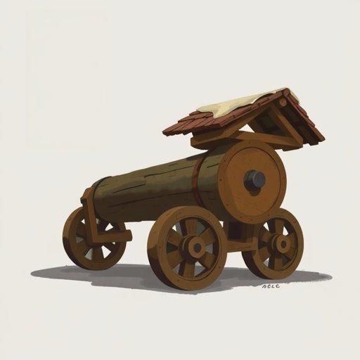
prompt
Gouache painting for a historical strategy game, flat opaque color shapes, simple graphic forms, matte paper texture, limited palette. A battering ram: a heavy log with an iron-capped point under a sloping roof of wooden planks and hides, on four solid wooden wheels. Single object centered, clear silhouette, isolated on a plain flat light grey background, three-quarter view.

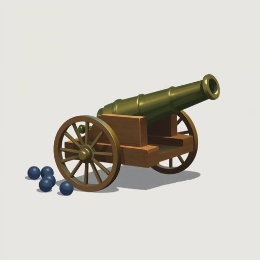
Los cañones livianos que llegaron con Cristóvão da Gama (1541).
prompt
Gouache painting for a historical strategy game, flat opaque color shapes, simple graphic forms, matte paper texture, limited palette. A small 16th-century bronze cannon on a two-wheeled wooden carriage, a few round iron balls beside it. Single object centered, clear silhouette, isolated on a plain flat light grey background, three-quarter view.

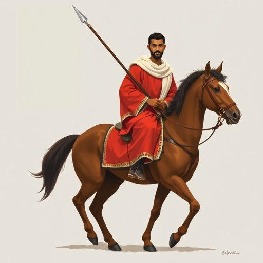

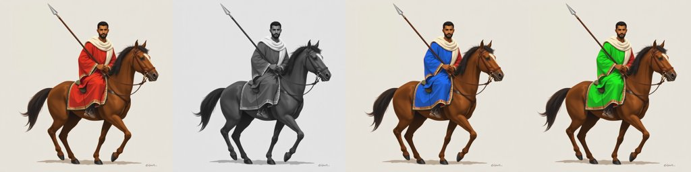
prompt
Gouache painting for a historical strategy game, flat opaque color shapes, simple graphic forms, matte paper texture, limited palette. A rider on a small sturdy highland horse, holding a long spear and a round convex shield of thick hide. He wears a long plain solid bright red cotton tunic, one flat uniform red color and a white cotton shawl (shamma) with a thin colored woven border draped over one shoulder. The rider is an Ethiopian Amhara man from the northern Ethiopian highlands, a grown adult in his early thirties, with a mature face: an oval face, high cheekbones, a slightly aquiline nose, large dark eyes, faint expression lines around the eyes, warm medium-brown skin, full dark brown lips, short tightly curled black hair and a short trimmed black beard, a thick adult neck, broad shoulders and adult body proportions, a mature man of about thirty-five with a strong adult face and smile lines. Natural white cotton, hide and leather tones for everything except the red tunic. One single rider and horse, the whole horse visible, three-quarter view, isolated on a plain flat light grey background.

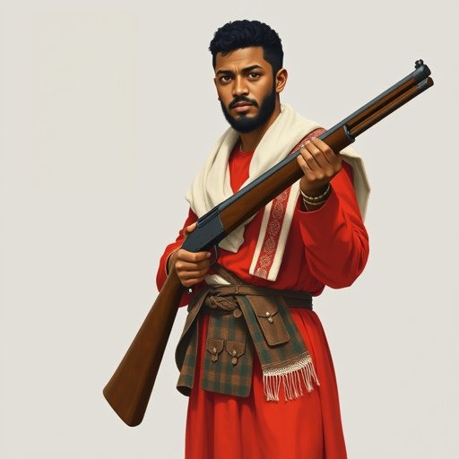

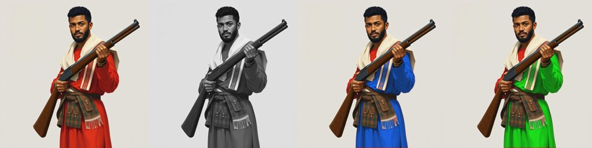
prompt
Gouache painting for a historical strategy game, flat opaque color shapes, simple graphic forms, matte paper texture, limited palette. A musketeer holding a long matchlock musket with a wooden stock, a powder horn and a leather pouch at his belt. He wears a long plain solid bright red cotton tunic, one flat uniform red color reaching the knees and a white cotton shawl (shamma) with a thin colored woven border draped over one shoulder. The figure is an Ethiopian Amhara man from the northern Ethiopian highlands, a grown adult in his early thirties, with a mature face: an oval face, high cheekbones, a slightly aquiline nose, large dark eyes, faint expression lines around the eyes, warm medium-brown skin, full dark brown lips, short tightly curled black hair and a short trimmed black beard, a thick adult neck, broad shoulders and adult body proportions, a mature man of about thirty-five with a strong adult face and smile lines. Natural white cotton, hide and leather tones for everything except the red tunic. Waist-up portrait of one single person: the head, shoulders and hands fill the frame, the tool or weapon visible next to the body, three-quarter view, isolated on a plain flat light grey background.

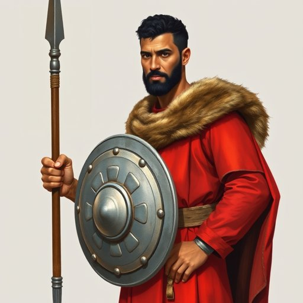

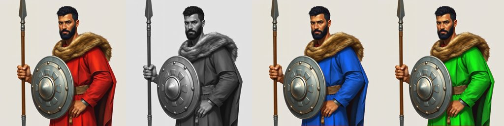
prompt
Gouache painting for a historical strategy game, flat opaque color shapes, simple graphic forms, matte paper texture, limited palette. An elite guard holding a long spear and a round convex shield of thick hide covered with silver-colored metal plates, a lion-mane headdress around his face. He wears a long plain solid bright red cotton tunic, one flat uniform red color and a short cape of lion skin over the shoulders. The figure is an Ethiopian Amhara man from the northern Ethiopian highlands, a grown adult in his early thirties, with a mature face: an oval face, high cheekbones, a slightly aquiline nose, large dark eyes, faint expression lines around the eyes, warm medium-brown skin, full dark brown lips, short tightly curled black hair and a short trimmed black beard, a thick adult neck, broad shoulders and adult body proportions, a mature man of about thirty-five with a strong adult face and smile lines. Natural white cotton, hide and leather tones for everything except the red tunic. Waist-up portrait of one single person: the head, shoulders and hands fill the frame, the tool or weapon visible next to the body, three-quarter view, isolated on a plain flat light grey background.

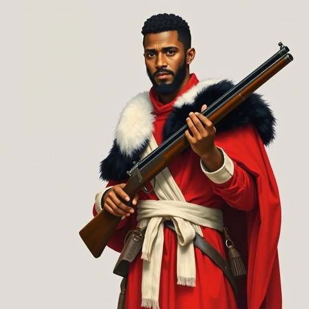

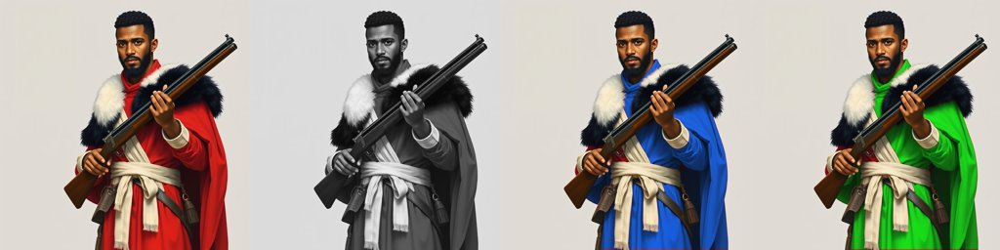
prompt
Gouache painting for a historical strategy game, flat opaque color shapes, simple graphic forms, matte paper texture, limited palette. An elite musketeer holding a long matchlock musket, wearing a cape of black and white colobus monkey fur, a long plain solid bright red cotton tunic, one flat uniform red color and a white cotton sash. The figure is an Ethiopian Amhara man from the northern Ethiopian highlands, a grown adult in his early thirties, with a mature face: an oval face, high cheekbones, a slightly aquiline nose, large dark eyes, faint expression lines around the eyes, warm medium-brown skin, full dark brown lips, short tightly curled black hair and a short trimmed black beard, a thick adult neck, broad shoulders and adult body proportions, a mature man of about thirty-five with a strong adult face and smile lines. Natural white cotton, hide and leather tones for everything except the red tunic. Waist-up portrait of one single person: the head, shoulders and hands fill the frame, the tool or weapon visible next to the body, three-quarter view, isolated on a plain flat light grey background.

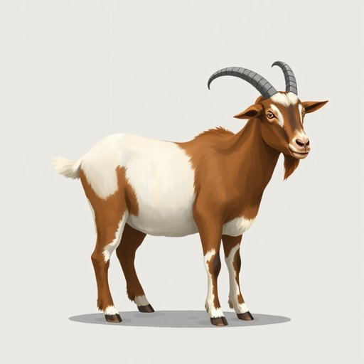
prompt
Gouache painting for a historical strategy game, flat opaque color shapes, simple graphic forms, matte paper texture, limited palette. A single brown and white highland goat with short curved horns. One single animal standing, the whole body visible, three-quarter view, isolated on a plain flat light grey background.

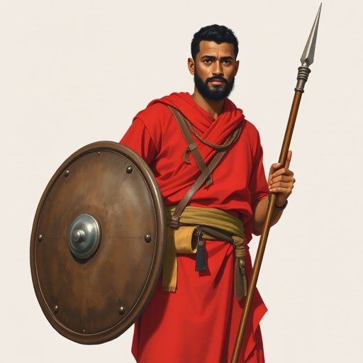

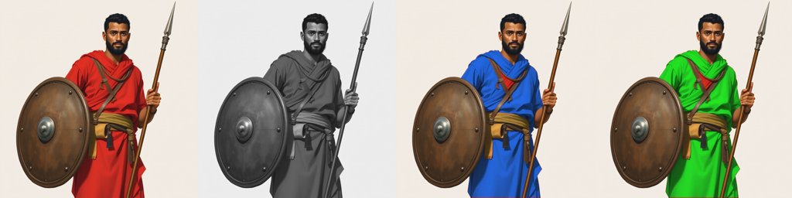
El šotäl (espada curva) queda solo en la ficha.
antes: v1

prompt
Gouache painting for a historical strategy game, flat opaque color shapes, simple graphic forms, matte paper texture, limited palette. An infantry warrior holding one a round convex shield of thick hide (gasha) on his left arm and a spear with two short javelins in his right hand. He wears a long plain solid bright red cotton tunic, one flat uniform red color reaching the knees. The figure is an Ethiopian Amhara man from the northern Ethiopian highlands, a grown adult in his early thirties, with a mature face: an oval face, high cheekbones, a slightly aquiline nose, large dark eyes, faint expression lines around the eyes, warm medium-brown skin, full dark brown lips, short tightly curled black hair and a short trimmed black beard, a thick adult neck, broad shoulders and adult body proportions, a mature man of about thirty-five with a strong adult face and smile lines. Natural white cotton, hide and leather tones for everything except the red tunic. Waist-up portrait of one single person: the head, shoulders and hands fill the frame, the tool or weapon visible next to the body, three-quarter view, isolated on a plain flat light grey background.

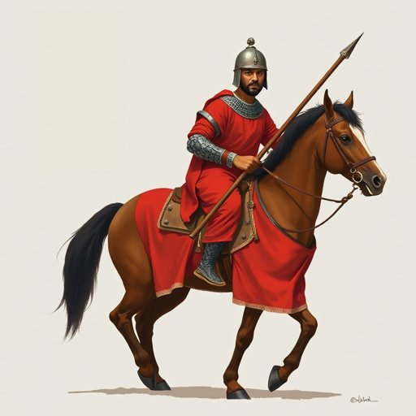

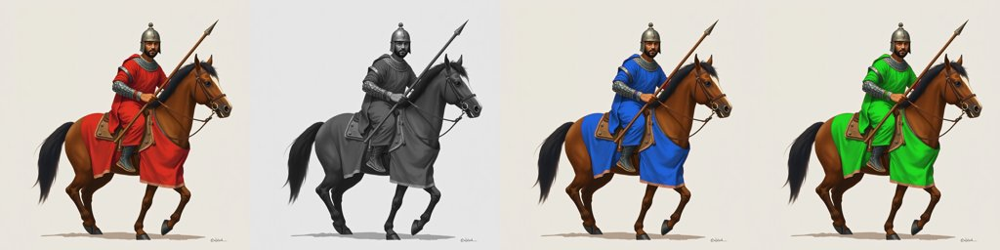
prompt
Gouache painting for a historical strategy game, flat opaque color shapes, simple graphic forms, matte paper texture, limited palette. A heavy horseman on a small sturdy highland horse with a padded saddle cloth, wearing a long shirt of iron chain mail over a long plain solid bright red cotton tunic, one flat uniform red color, an iron helmet, holding a long spear. The rider is an Ethiopian Amhara man from the northern Ethiopian highlands, a grown adult in his early thirties, with a mature face: an oval face, high cheekbones, a slightly aquiline nose, large dark eyes, faint expression lines around the eyes, warm medium-brown skin, full dark brown lips, short tightly curled black hair and a short trimmed black beard, a thick adult neck, broad shoulders and adult body proportions, a mature man of about thirty-five with a strong adult face and smile lines. Natural white cotton, hide and leather tones for everything except the red tunic. One single rider and horse, the whole horse visible, three-quarter view, isolated on a plain flat light grey background.

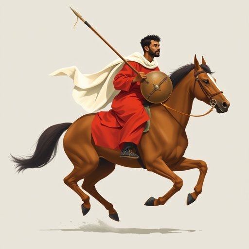

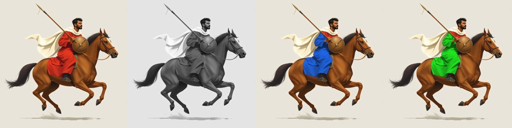
Nombre de reserva hasta consultar a académicos y comunidades oromo.
prompt
Gouache painting for a historical strategy game, flat opaque color shapes, simple graphic forms, matte paper texture, limited palette. A fast court horseman on a small sturdy highland horse at a gallop, holding a light spear and a round convex shield of thick hide. He wears a long plain solid bright red cotton tunic, one flat uniform red color and a white cotton shawl blowing behind him. The rider is an Ethiopian Amhara man from the northern Ethiopian highlands, a grown adult in his early thirties, with a mature face: an oval face, high cheekbones, a slightly aquiline nose, large dark eyes, faint expression lines around the eyes, warm medium-brown skin, full dark brown lips, short tightly curled black hair and a short trimmed black beard, a thick adult neck, broad shoulders and adult body proportions, a mature man of about thirty-five with a strong adult face and smile lines. Natural white cotton, hide and leather tones for everything except the red tunic. One single rider and horse, the whole horse visible, three-quarter view, isolated on a plain flat light grey background.

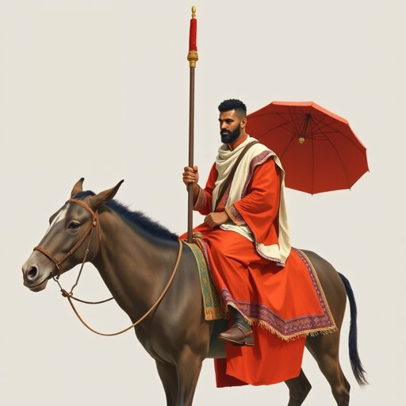

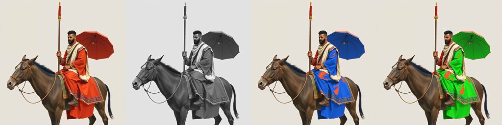
La corte se mudaba con su campamento (kätäma).
prompt
Gouache painting for a historical strategy game, flat opaque color shapes, simple graphic forms, matte paper texture, limited palette. A court official riding a mule, holding a long staff of office, a large red cloth parasol raised above him. He wears a long plain solid bright red cotton tunic, one flat uniform red color and a white cotton shawl (shamma) with a thin colored woven border draped over one shoulder. The rider is an Ethiopian Amhara man from the northern Ethiopian highlands, a grown adult in his early thirties, with a mature face: an oval face, high cheekbones, a slightly aquiline nose, large dark eyes, faint expression lines around the eyes, warm medium-brown skin, full dark brown lips, short tightly curled black hair and a short trimmed black beard, a thick adult neck, broad shoulders and adult body proportions, a mature man of about thirty-five with a strong adult face and smile lines. Natural white cotton, hide and leather tones for everything except the red tunic. One single rider and horse, the whole horse visible, three-quarter view, isolated on a plain flat light grey background.
2 · Edificios, hitos y maravilla (un ícono por edificio) 27/27

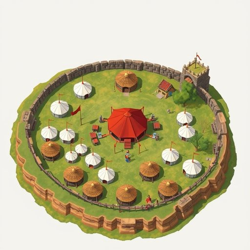
prompt
Gouache painting for a historical strategy game, flat opaque color shapes, simple graphic forms, matte paper texture, limited palette. A royal camp: a large red cloth tent in the center surrounded by many smaller white tents and round thatched houses in a fixed plan, inside a thorn fence, banners on tall poles. Single building, three-quarter view from above like a strategy game icon, the whole building visible and centered, isolated on a plain flat light grey background. Ethiopian highland architecture of the 16th and 17th centuries: round houses (tukul) with walls of stone or wattle and daub and steep conical thatched roofs, walls of brown and grey fieldstone set in mud, green highland plateau with flat-topped cliffs (amba), juniper and acacia trees.

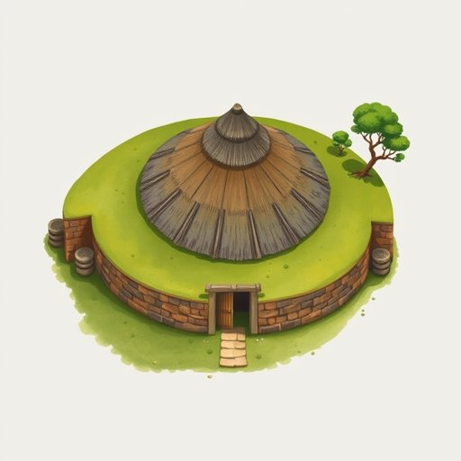
prompt
Gouache painting for a historical strategy game, flat opaque color shapes, simple graphic forms, matte paper texture, limited palette. A single round house with a low wall of brown fieldstone and mud and a steep conical thatched roof, one wooden doorway. Single building, three-quarter view from above like a strategy game icon, the whole building visible and centered, isolated on a plain flat light grey background. Ethiopian highland architecture of the 16th and 17th centuries: round houses (tukul) with walls of stone or wattle and daub and steep conical thatched roofs, walls of brown and grey fieldstone set in mud, green highland plateau with flat-topped cliffs (amba), juniper and acacia trees.

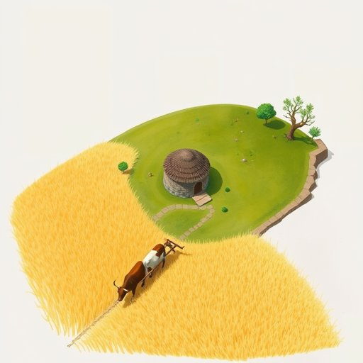
prompt
Gouache painting for a historical strategy game, flat opaque color shapes, simple graphic forms, matte paper texture, limited palette. A field of golden teff being ploughed by a pair of oxen pulling a wooden plough, a small round thatched house at the edge. Single building, three-quarter view from above like a strategy game icon, the whole building visible and centered, isolated on a plain flat light grey background. Ethiopian highland architecture of the 16th and 17th centuries: round houses (tukul) with walls of stone or wattle and daub and steep conical thatched roofs, walls of brown and grey fieldstone set in mud, green highland plateau with flat-topped cliffs (amba), juniper and acacia trees.

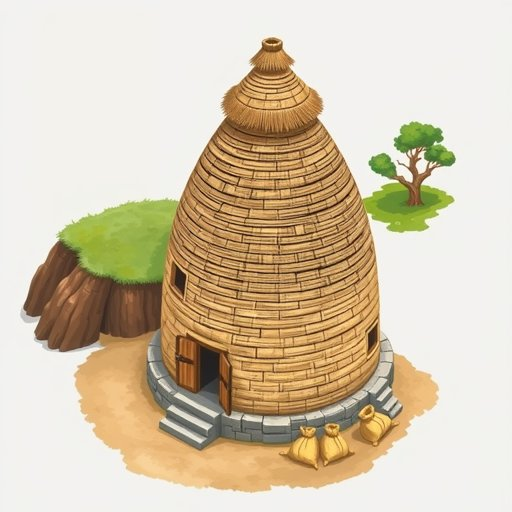
prompt
Gouache painting for a historical strategy game, flat opaque color shapes, simple graphic forms, matte paper texture, limited palette. A large tall woven basket granary plastered with mud, standing on a stone base, with a small conical thatched roof, sacks of grain beside it. Single building, three-quarter view from above like a strategy game icon, the whole building visible and centered, isolated on a plain flat light grey background. Ethiopian highland architecture of the 16th and 17th centuries: round houses (tukul) with walls of stone or wattle and daub and steep conical thatched roofs, walls of brown and grey fieldstone set in mud, green highland plateau with flat-topped cliffs (amba), juniper and acacia trees.

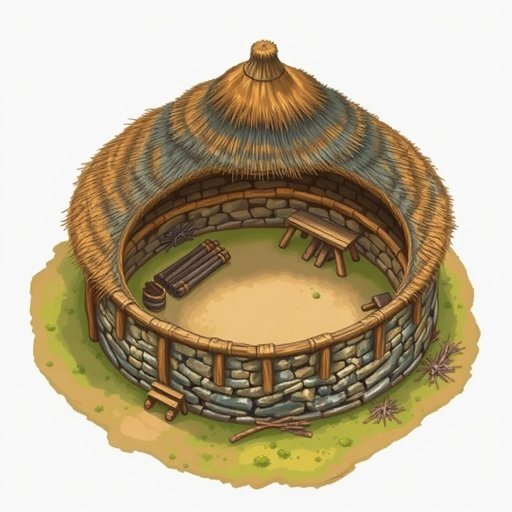
prompt
Gouache painting for a historical strategy game, flat opaque color shapes, simple graphic forms, matte paper texture, limited palette. An open-sided shed with a thatched roof on wooden posts, stacks of juniper logs and bundles of branches. Single building, three-quarter view from above like a strategy game icon, the whole building visible and centered, isolated on a plain flat light grey background. Ethiopian highland architecture of the 16th and 17th centuries: round houses (tukul) with walls of stone or wattle and daub and steep conical thatched roofs, walls of brown and grey fieldstone set in mud, green highland plateau with flat-topped cliffs (amba), juniper and acacia trees.

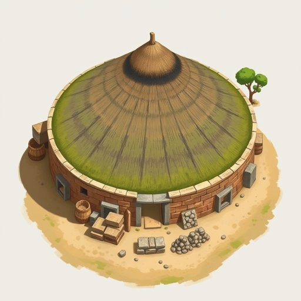
prompt
Gouache painting for a historical strategy game, flat opaque color shapes, simple graphic forms, matte paper texture, limited palette. A round stone workshop with a thatched roof, piles of cut stone blocks and baskets of earth and rocks in front. Single building, three-quarter view from above like a strategy game icon, the whole building visible and centered, isolated on a plain flat light grey background. Ethiopian highland architecture of the 16th and 17th centuries: round houses (tukul) with walls of stone or wattle and daub and steep conical thatched roofs, walls of brown and grey fieldstone set in mud, green highland plateau with flat-topped cliffs (amba), juniper and acacia trees.

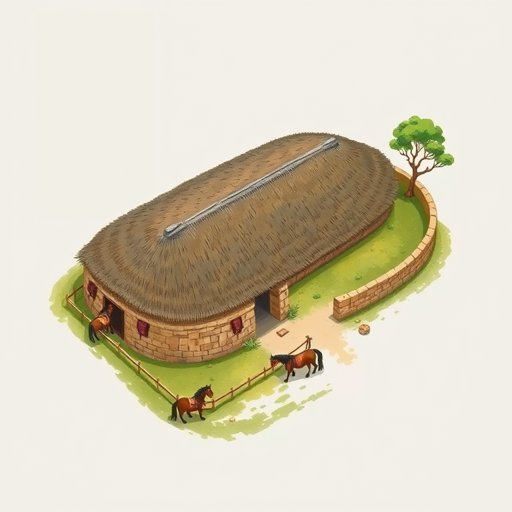
prompt
Gouache painting for a historical strategy game, flat opaque color shapes, simple graphic forms, matte paper texture, limited palette. A long low stable of fieldstone with a thatched roof, horses tied to a wooden rail in front, saddles on a fence. Single building, three-quarter view from above like a strategy game icon, the whole building visible and centered, isolated on a plain flat light grey background. Ethiopian highland architecture of the 16th and 17th centuries: round houses (tukul) with walls of stone or wattle and daub and steep conical thatched roofs, walls of brown and grey fieldstone set in mud, green highland plateau with flat-topped cliffs (amba), juniper and acacia trees.

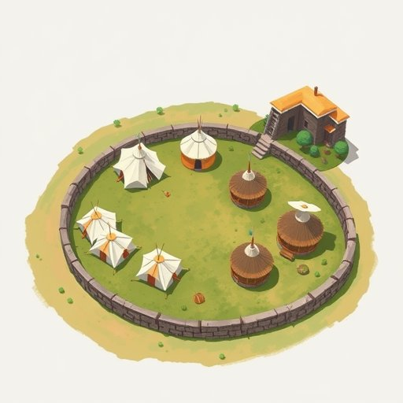
prompt
Gouache painting for a historical strategy game, flat opaque color shapes, simple graphic forms, matte paper texture, limited palette. A soldiers' camp: a ring of white cloth tents and two round thatched houses, spears planted upright in the ground and round hide shields leaning on them. Single building, three-quarter view from above like a strategy game icon, the whole building visible and centered, isolated on a plain flat light grey background. Ethiopian highland architecture of the 16th and 17th centuries: round houses (tukul) with walls of stone or wattle and daub and steep conical thatched roofs, walls of brown and grey fieldstone set in mud, green highland plateau with flat-topped cliffs (amba), juniper and acacia trees.

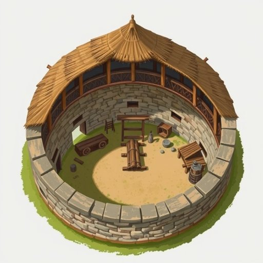
prompt
Gouache painting for a historical strategy game, flat opaque color shapes, simple graphic forms, matte paper texture, limited palette. An open workshop of fieldstone and wooden beams with a thatched roof, logs, wheels and a half-built battering ram inside. Single building, three-quarter view from above like a strategy game icon, the whole building visible and centered, isolated on a plain flat light grey background. Ethiopian highland architecture of the 16th and 17th centuries: round houses (tukul) with walls of stone or wattle and daub and steep conical thatched roofs, walls of brown and grey fieldstone set in mud, green highland plateau with flat-topped cliffs (amba), juniper and acacia trees.

prompt
Gouache painting for a historical strategy game, flat opaque color shapes, simple graphic forms, matte paper texture, limited palette. A tall round tower of brown fieldstone with a flat top and a small parapet, standing at the edge of a steep cliff. Single building, three-quarter view from above like a strategy game icon, the whole building visible and centered, isolated on a plain flat light grey background. Ethiopian highland architecture of the 16th and 17th centuries: round houses (tukul) with walls of stone or wattle and daub and steep conical thatched roofs, walls of brown and grey fieldstone set in mud, green highland plateau with flat-topped cliffs (amba), juniper and acacia trees.

prompt
Gouache painting for a historical strategy game, flat opaque color shapes, simple graphic forms, matte paper texture, limited palette. A flat-topped mountain with sheer cliff sides (an amba), a brown stone wall along the edge at the top, a few round thatched houses on top and one narrow path climbing up. Single building, three-quarter view from above like a strategy game icon, the whole building visible and centered, isolated on a plain flat light grey background. Ethiopian highland architecture of the 16th and 17th centuries: round houses (tukul) with walls of stone or wattle and daub and steep conical thatched roofs, walls of brown and grey fieldstone set in mud, green highland plateau with flat-topped cliffs (amba), juniper and acacia trees.

prompt
Gouache painting for a historical strategy game, flat opaque color shapes, simple graphic forms, matte paper texture, limited palette. A straight segment of a fence of thick wooden stakes and thorny branches woven together. Single building, three-quarter view from above like a strategy game icon, the whole building visible and centered, isolated on a plain flat light grey background. Ethiopian highland architecture of the 16th and 17th centuries: round houses (tukul) with walls of stone or wattle and daub and steep conical thatched roofs, walls of brown and grey fieldstone set in mud, green highland plateau with flat-topped cliffs (amba), juniper and acacia trees.

prompt
Gouache painting for a historical strategy game, flat opaque color shapes, simple graphic forms, matte paper texture, limited palette. A wooden gate of thick planks in a fence of stakes and thorn branches. Single building, three-quarter view from above like a strategy game icon, the whole building visible and centered, isolated on a plain flat light grey background. Ethiopian highland architecture of the 16th and 17th centuries: round houses (tukul) with walls of stone or wattle and daub and steep conical thatched roofs, walls of brown and grey fieldstone set in mud, green highland plateau with flat-topped cliffs (amba), juniper and acacia trees.

prompt
Gouache painting for a historical strategy game, flat opaque color shapes, simple graphic forms, matte paper texture, limited palette. A straight segment of a thick wall of brown fieldstone set in mud, with a flat top. Single building, three-quarter view from above like a strategy game icon, the whole building visible and centered, isolated on a plain flat light grey background. Ethiopian highland architecture of the 16th and 17th centuries: round houses (tukul) with walls of stone or wattle and daub and steep conical thatched roofs, walls of brown and grey fieldstone set in mud, green highland plateau with flat-topped cliffs (amba), juniper and acacia trees.

prompt
Gouache painting for a historical strategy game, flat opaque color shapes, simple graphic forms, matte paper texture, limited palette. A gateway with a round stone arch and a heavy wooden door set in a thick wall of brown fieldstone. Single building, three-quarter view from above like a strategy game icon, the whole building visible and centered, isolated on a plain flat light grey background. Ethiopian highland architecture of the 16th and 17th centuries: round houses (tukul) with walls of stone or wattle and daub and steep conical thatched roofs, walls of brown and grey fieldstone set in mud, green highland plateau with flat-topped cliffs (amba), juniper and acacia trees.

prompt
Gouache painting for a historical strategy game, flat opaque color shapes, simple graphic forms, matte paper texture, limited palette. A round tower of brown fieldstone with a flat top, standing on a thick stone wall. Single building, three-quarter view from above like a strategy game icon, the whole building visible and centered, isolated on a plain flat light grey background. Ethiopian highland architecture of the 16th and 17th centuries: round houses (tukul) with walls of stone or wattle and daub and steep conical thatched roofs, walls of brown and grey fieldstone set in mud, green highland plateau with flat-topped cliffs (amba), juniper and acacia trees.

prompt
Gouache painting for a historical strategy game, flat opaque color shapes, simple graphic forms, matte paper texture, limited palette. An open market ground with stalls under simple thatched shades, salt bars, sacks of grain, clay pots, cotton cloth and mules. Single building, three-quarter view from above like a strategy game icon, the whole building visible and centered, isolated on a plain flat light grey background. Ethiopian highland architecture of the 16th and 17th centuries: round houses (tukul) with walls of stone or wattle and daub and steep conical thatched roofs, walls of brown and grey fieldstone set in mud, green highland plateau with flat-topped cliffs (amba), juniper and acacia trees.

Solo el paisaje.
prompt
Gouache painting for a historical strategy game, flat opaque color shapes, simple graphic forms, matte paper texture, limited palette. A huge old wild fig tree with a wide spreading crown standing alone on a green highland meadow, flat-topped cliffs far behind, open sky. Single building, three-quarter view from above like a strategy game icon, the whole building visible and centered, isolated on a plain flat light grey background. Ethiopian highland architecture of the 16th and 17th centuries: round houses (tukul) with walls of stone or wattle and daub and steep conical thatched roofs, walls of brown and grey fieldstone set in mud, green highland plateau with flat-topped cliffs (amba), juniper and acacia trees.

prompt
Gouache painting for a historical strategy game, flat opaque color shapes, simple graphic forms, matte paper texture, limited palette. A new camp being laid out: wooden stakes and ropes marking the ground in a circle, rolled tents, tent poles and bundles waiting on the grass, one tent half raised. Single building, three-quarter view from above like a strategy game icon, the whole building visible and centered, isolated on a plain flat light grey background. Ethiopian highland architecture of the 16th and 17th centuries: round houses (tukul) with walls of stone or wattle and daub and steep conical thatched roofs, walls of brown and grey fieldstone set in mud, green highland plateau with flat-topped cliffs (amba), juniper and acacia trees.

El derecho de tributo, no un palacio.
prompt
Gouache painting for a historical strategy game, flat opaque color shapes, simple graphic forms, matte paper texture, limited palette. A farmstead of three round thatched houses with fields around them and a pile of rectangular white salt bars and sacks of grain stacked as tribute in front. Single building, three-quarter view from above like a strategy game icon, the whole building visible and centered, isolated on a plain flat light grey background. Ethiopian highland architecture of the 16th and 17th centuries: round houses (tukul) with walls of stone or wattle and daub and steep conical thatched roofs, walls of brown and grey fieldstone set in mud, green highland plateau with flat-topped cliffs (amba), juniper and acacia trees.

Pendiente C-69: sin cruz y sin uso como arma; el bosque y el recinto.
prompt
Gouache painting for a historical strategy game, flat opaque color shapes, simple graphic forms, matte paper texture, limited palette. A round compound in a grove of tall old juniper and olive trees: a stone wall with a gatehouse and inside it a large round building with a gallery of wooden posts and a steep conical thatched roof. Single building, three-quarter view from above like a strategy game icon, the whole building visible and centered, isolated on a plain flat light grey background. Ethiopian highland architecture of the 16th and 17th centuries: round houses (tukul) with walls of stone or wattle and daub and steep conical thatched roofs, walls of brown and grey fieldstone set in mud, green highland plateau with flat-topped cliffs (amba), juniper and acacia trees.

Ni Lalibela ni Debre Damo (lugares vivos de peregrinación, C-69).
prompt
Gouache painting for a historical strategy game, flat opaque color shapes, simple graphic forms, matte paper texture, limited palette. A monastic community on a hillside: small round stone cells with thatched roofs inside a stone wall, a library hut with leather book satchels hanging, terraced gardens. Single building, three-quarter view from above like a strategy game icon, the whole building visible and centered, isolated on a plain flat light grey background. Ethiopian highland architecture of the 16th and 17th centuries: round houses (tukul) with walls of stone or wattle and daub and steep conical thatched roofs, walls of brown and grey fieldstone set in mud, green highland plateau with flat-topped cliffs (amba), juniper and acacia trees.

Amba Gəšän.
prompt
Gouache painting for a historical strategy game, flat opaque color shapes, simple graphic forms, matte paper texture, limited palette. A great flat-topped mountain with sheer cliffs, a stone wall along the rim, round houses and a storehouse on the top, and a single zigzag path to a gate. Single building, three-quarter view from above like a strategy game icon, the whole building visible and centered, isolated on a plain flat light grey background. Ethiopian highland architecture of the 16th and 17th centuries: round houses (tukul) with walls of stone or wattle and daub and steep conical thatched roofs, walls of brown and grey fieldstone set in mud, green highland plateau with flat-topped cliffs (amba), juniper and acacia trees.

prompt
Gouache painting for a historical strategy game, flat opaque color shapes, simple graphic forms, matte paper texture, limited palette. A large stone-walled corral full of horses beside a long thatched stable, grooms' round houses and piles of hay. Single building, three-quarter view from above like a strategy game icon, the whole building visible and centered, isolated on a plain flat light grey background. Ethiopian highland architecture of the 16th and 17th centuries: round houses (tukul) with walls of stone or wattle and daub and steep conical thatched roofs, walls of brown and grey fieldstone set in mud, green highland plateau with flat-topped cliffs (amba), juniper and acacia trees.

Fasil Gəbbi, siglo XVII.
prompt
Gouache painting for a historical strategy game, flat opaque color shapes, simple graphic forms, matte paper texture, limited palette. A two-story castle of brown and grey stone with round corner towers topped by small domes and a taller square tower, a stone wall around it. Single building, three-quarter view from above like a strategy game icon, the whole building visible and centered, isolated on a plain flat light grey background. Ethiopian highland architecture of the 16th and 17th centuries: round houses (tukul) with walls of stone or wattle and daub and steep conical thatched roofs, walls of brown and grey fieldstone set in mud, green highland plateau with flat-topped cliffs (amba), juniper and acacia trees.

prompt
Gouache painting for a historical strategy game, flat opaque color shapes, simple graphic forms, matte paper texture, limited palette. A court camp with a large red royal tent, wooden trade crates opened to show muskets, two small bronze cannons on carriages and barrels of powder. Single building, three-quarter view from above like a strategy game icon, the whole building visible and centered, isolated on a plain flat light grey background. Ethiopian highland architecture of the 16th and 17th centuries: round houses (tukul) with walls of stone or wattle and daub and steep conical thatched roofs, walls of brown and grey fieldstone set in mud, green highland plateau with flat-topped cliffs (amba), juniper and acacia trees.

Sin las iglesias del recinto (H-49).
prompt
Gouache painting for a historical strategy game, flat opaque color shapes, simple graphic forms, matte paper texture, limited palette. The royal enclosure of Gondar: a large two-story castle of brown and grey stone with round domed corner towers and a tall square tower, a second smaller castle beside it, all inside a long stone wall with a gate. Single building, three-quarter view from above like a strategy game icon, the whole building visible and centered, isolated on a plain flat light grey background. Ethiopian highland architecture of the 16th and 17th centuries: round houses (tukul) with walls of stone or wattle and daub and steep conical thatched roofs, walls of brown and grey fieldstone set in mud, green highland plateau with flat-topped cliffs (amba), juniper and acacia trees.
3 · Mejoras propias 8/8

prompt
Gouache painting for a historical strategy game, flat opaque color shapes, simple graphic forms, matte paper texture, limited palette. A wooden ox plough with an iron-tipped share lying beside a bound sheaf of golden teff grass with tiny grains. Single object centered, clear silhouette, isolated on a plain flat light grey background, three-quarter view.

Una hoja suelta con sello, no un evangeliario abierto.
prompt
Gouache painting for a historical strategy game, flat opaque color shapes, simple graphic forms, matte paper texture, limited palette. A single loose parchment sheet with neat lines of dark script and a round seal, lying flat beside a reed pen. Single object centered, clear silhouette, isolated on a plain flat light grey background, three-quarter view.

Solo la farmacopea, sin oraciones ni rollos protectores.
prompt
Gouache painting for a historical strategy game, flat opaque color shapes, simple graphic forms, matte paper texture, limited palette. A branch of the kosso tree with hanging clusters of pink-red flowers, beside a small clay pot and a bundle of dried herbs. Single object centered, clear silhouette, isolated on a plain flat light grey background, three-quarter view.

prompt
Gouache painting for a historical strategy game, flat opaque color shapes, simple graphic forms, matte paper texture, limited palette. A long shirt of iron chain mail with short sleeves, laid over a wooden stand. Single object centered, clear silhouette, isolated on a plain flat light grey background, three-quarter view.

prompt
Gouache painting for a historical strategy game, flat opaque color shapes, simple graphic forms, matte paper texture, limited palette. A flat-topped mountain with sheer vertical cliff sides rising from a green plateau, a thin stone wall along its rim. Single object centered, clear silhouette, isolated on a plain flat light grey background, three-quarter view.

prompt
Gouache painting for a historical strategy game, flat opaque color shapes, simple graphic forms, matte paper texture, limited palette. A neat stack of rectangular white salt bars (amole) bound with reed cord, on a mule's pack saddle. Single object centered, clear silhouette, isolated on a plain flat light grey background, three-quarter view.

prompt
Gouache painting for a historical strategy game, flat opaque color shapes, simple graphic forms, matte paper texture, limited palette. A small wooden barrel of gunpowder, a curved powder horn and a leather pouch of round lead balls. Single object centered, clear silhouette, isolated on a plain flat light grey background, three-quarter view.

prompt
Gouache painting for a historical strategy game, flat opaque color shapes, simple graphic forms, matte paper texture, limited palette. A rolled red cloth royal tent tied with ropes, a bundle of wooden tent poles and iron stakes beside it. Single object centered, clear silhouette, isolated on a plain flat light grey background, three-quarter view.
4 · Accesorios (herramientas y armas para el 3D) 10/10

prompt
Gouache painting for a historical strategy game, flat opaque color shapes, simple graphic forms, matte paper texture, limited palette. A long spear with a straight wooden shaft and a narrow leaf-shaped iron point. Single object for a 3D model reference, side view, centered, whole object visible, plain flat light grey background, even light.

prompt
Gouache painting for a historical strategy game, flat opaque color shapes, simple graphic forms, matte paper texture, limited palette. Three short javelins with thin wooden shafts and small iron points, tied together. Single object for a 3D model reference, side view, centered, whole object visible, plain flat light grey background, even light.

prompt
Gouache painting for a historical strategy game, flat opaque color shapes, simple graphic forms, matte paper texture, limited palette. A round convex shield of thick buffalo hide with a raised rim and a few brass studs. Single object for a 3D model reference, side view, centered, whole object visible, plain flat light grey background, even light.

prompt
Gouache painting for a historical strategy game, flat opaque color shapes, simple graphic forms, matte paper texture, limited palette. A 17th-century matchlock musket with a long iron barrel and a wooden stock. Single object for a 3D model reference, side view, centered, whole object visible, plain flat light grey background, even light.

prompt
Gouache painting for a historical strategy game, flat opaque color shapes, simple graphic forms, matte paper texture, limited palette. An Ethiopian wooden ox plough: a long beam, a single handle and a short pointed iron share. Single object for a 3D model reference, side view, centered, whole object visible, plain flat light grey background, even light.

antes: v1

prompt
Gouache painting for a historical strategy game, flat opaque color shapes, simple graphic forms, matte paper texture, limited palette. A harvesting sickle: a thin crescent-shaped iron blade curving forward from a short straight wooden handle, side view. Single object for a 3D model reference, side view, centered, whole object visible, plain flat light grey background, even light.

prompt
Gouache painting for a historical strategy game, flat opaque color shapes, simple graphic forms, matte paper texture, limited palette. An axe with a narrow iron blade fixed in a wooden handle. Single object for a 3D model reference, side view, centered, whole object visible, plain flat light grey background, even light.

prompt
Gouache painting for a historical strategy game, flat opaque color shapes, simple graphic forms, matte paper texture, limited palette. A large round black clay water jar with a narrow neck and a small handle. Single object for a 3D model reference, side view, centered, whole object visible, plain flat light grey background, even light.

prompt
Gouache painting for a historical strategy game, flat opaque color shapes, simple graphic forms, matte paper texture, limited palette. A round woven grass basket with a lid, in natural straw colors with a simple dark pattern. Single object for a 3D model reference, side view, centered, whole object visible, plain flat light grey background, even light.

prompt
Gouache painting for a historical strategy game, flat opaque color shapes, simple graphic forms, matte paper texture, limited palette. A thin wooden spindle with a round wooden whorl and some spun white cotton thread. Single object for a 3D model reference, side view, centered, whole object visible, plain flat light grey background, even light.
5 · Hojas para el 3D por edad (lo único por edad) 8/8


prompt
Gouache painting for a historical strategy game, flat opaque color shapes, simple graphic forms, matte paper texture, limited palette. Character turnaround reference sheet for 3D modeling: the same person shown side by side in front view and in side profile view, the same headwear and clothing in every view, standing in A-pose with arms held straight and out at 45 degrees from the body, open empty hands. Clothing: a long plain solid bright red cotton tunic, one flat uniform red color, reaching the knees; bare head; barefoot. The person is an Ethiopian Amhara man from the northern Ethiopian highlands, a grown adult in his early thirties, with a mature face: an oval face, high cheekbones, a slightly aquiline nose, large dark eyes, faint expression lines around the eyes, warm medium-brown skin, full dark brown lips, short tightly curled black hair and a short trimmed black beard, a thick adult neck, broad shoulders and adult body proportions, a mature man of about thirty-five with a strong adult face and smile lines. Natural white cotton, hide and leather tones for everything except the red tunic. Even flat studio light, plain flat light grey background.


prompt
Gouache painting for a historical strategy game, flat opaque color shapes, simple graphic forms, matte paper texture, limited palette. Character turnaround reference sheet for 3D modeling: the same person shown side by side in front view and in side profile view, the same headwear and clothing in every view, standing in A-pose with arms held straight and out at 45 degrees from the body, open empty hands. Clothing: a long plain solid bright red cotton tunic, one flat uniform red color, reaching the knees; a white cotton shawl (shamma) with a thin colored woven border draped over one shoulder; barefoot. The person is an Ethiopian Amhara man from the northern Ethiopian highlands, a grown adult in his early thirties, with a mature face: an oval face, high cheekbones, a slightly aquiline nose, large dark eyes, faint expression lines around the eyes, warm medium-brown skin, full dark brown lips, short tightly curled black hair and a short trimmed black beard, a thick adult neck, broad shoulders and adult body proportions, a mature man of about thirty-five with a strong adult face and smile lines. Natural white cotton, hide and leather tones for everything except the red tunic. Even flat studio light, plain flat light grey background.


prompt
Gouache painting for a historical strategy game, flat opaque color shapes, simple graphic forms, matte paper texture, limited palette. Character turnaround reference sheet for 3D modeling: the same person shown side by side in front view and in side profile view, the same headwear and clothing in every view, standing in A-pose with arms held straight and out at 45 degrees from the body, open empty hands. Clothing: a long plain solid bright red cotton tunic, one flat uniform red color, reaching the knees, over white cotton trousers; a white shawl with a wide colorful woven border; leather sandals. The person is an Ethiopian Amhara man from the northern Ethiopian highlands, a grown adult in his early thirties, with a mature face: an oval face, high cheekbones, a slightly aquiline nose, large dark eyes, faint expression lines around the eyes, warm medium-brown skin, full dark brown lips, short tightly curled black hair and a short trimmed black beard, a thick adult neck, broad shoulders and adult body proportions, a mature man of about thirty-five with a strong adult face and smile lines. Natural white cotton, hide and leather tones for everything except the red tunic. Even flat studio light, plain flat light grey background.


prompt
Gouache painting for a historical strategy game, flat opaque color shapes, simple graphic forms, matte paper texture, limited palette. Character turnaround reference sheet for 3D modeling: the same person shown side by side in front view and in side profile view, the same headwear and clothing in every view, standing in A-pose with arms held straight and out at 45 degrees from the body, open empty hands. Clothing: a long plain solid bright red cotton tunic, one flat uniform red color, reaching the knees, over white cotton trousers; a white shawl with a wide colorful border; a white cotton head cloth; leather sandals; a leather bag. The person is an Ethiopian Amhara man from the northern Ethiopian highlands, a grown adult in his early thirties, with a mature face: an oval face, high cheekbones, a slightly aquiline nose, large dark eyes, faint expression lines around the eyes, warm medium-brown skin, full dark brown lips, short tightly curled black hair and a short trimmed black beard, a thick adult neck, broad shoulders and adult body proportions, a mature man of about thirty-five with a strong adult face and smile lines. Natural white cotton, hide and leather tones for everything except the red tunic. Even flat studio light, plain flat light grey background.


prompt
Gouache painting for a historical strategy game, flat opaque color shapes, simple graphic forms, matte paper texture, limited palette. Character turnaround reference sheet for 3D modeling: the same person shown side by side in front view and in side profile view, the same headwear and clothing in every view, standing in A-pose with arms held straight and out at 45 degrees from the body, open empty hands. Clothing: a long plain solid bright red cotton tunic, one flat uniform red color, reaching the knees; bare head; barefoot; a plain hide shield on the back. The person is an Ethiopian Amhara man from the northern Ethiopian highlands, a grown adult in his early thirties, with a mature face: an oval face, high cheekbones, a slightly aquiline nose, large dark eyes, faint expression lines around the eyes, warm medium-brown skin, full dark brown lips, short tightly curled black hair and a short trimmed black beard, a thick adult neck, broad shoulders and adult body proportions, a mature man of about thirty-five with a strong adult face and smile lines. Natural white cotton, hide and leather tones for everything except the red tunic. Even flat studio light, plain flat light grey background.


prompt
Gouache painting for a historical strategy game, flat opaque color shapes, simple graphic forms, matte paper texture, limited palette. Character turnaround reference sheet for 3D modeling: the same person shown side by side in front view and in side profile view, the same headwear and clothing in every view, standing in A-pose with arms held straight and out at 45 degrees from the body, open empty hands. Clothing: a long plain solid bright red cotton tunic, one flat uniform red color, reaching the knees; a white cotton shawl (shamma) with a thin colored woven border draped over one shoulder; leather sandals; a round hide shield on the back. The person is an Ethiopian Amhara man from the northern Ethiopian highlands, a grown adult in his early thirties, with a mature face: an oval face, high cheekbones, a slightly aquiline nose, large dark eyes, faint expression lines around the eyes, warm medium-brown skin, full dark brown lips, short tightly curled black hair and a short trimmed black beard, a thick adult neck, broad shoulders and adult body proportions, a mature man of about thirty-five with a strong adult face and smile lines. Natural white cotton, hide and leather tones for everything except the red tunic. Even flat studio light, plain flat light grey background.


prompt
Gouache painting for a historical strategy game, flat opaque color shapes, simple graphic forms, matte paper texture, limited palette. Character turnaround reference sheet for 3D modeling: the same person shown side by side in front view and in side profile view, the same headwear and clothing in every view, standing in A-pose with arms held straight and out at 45 degrees from the body, open empty hands. Clothing: a long plain solid bright red cotton tunic, one flat uniform red color, reaching the knees, over white cotton trousers; a short cape of lion skin over the shoulders, in every view; leather sandals; a round hide shield with brass studs on the back. The person is an Ethiopian Amhara man from the northern Ethiopian highlands, a grown adult in his early thirties, with a mature face: an oval face, high cheekbones, a slightly aquiline nose, large dark eyes, faint expression lines around the eyes, warm medium-brown skin, full dark brown lips, short tightly curled black hair and a short trimmed black beard, a thick adult neck, broad shoulders and adult body proportions, a mature man of about thirty-five with a strong adult face and smile lines. Natural white cotton, hide and leather tones for everything except the red tunic. Even flat studio light, plain flat light grey background.


prompt
Gouache painting for a historical strategy game, flat opaque color shapes, simple graphic forms, matte paper texture, limited palette. Character turnaround reference sheet for 3D modeling: the same person shown side by side in front view and in side profile view, the same headwear and clothing in every view, standing in A-pose with arms held straight and out at 45 degrees from the body, open empty hands. Clothing: a long shirt of iron chain mail over a long plain solid bright red cotton tunic, one flat uniform red color; a lion-mane headdress around the face, in every view; leather sandals; a round hide shield with silver plates on the back. The person is an Ethiopian Amhara man from the northern Ethiopian highlands, a grown adult in his early thirties, with a mature face: an oval face, high cheekbones, a slightly aquiline nose, large dark eyes, faint expression lines around the eyes, warm medium-brown skin, full dark brown lips, short tightly curled black hair and a short trimmed black beard, a thick adult neck, broad shoulders and adult body proportions, a mature man of about thirty-five with a strong adult face and smile lines. Natural white cotton, hide and leather tones for everything except the red tunic. Even flat studio light, plain flat light grey background.